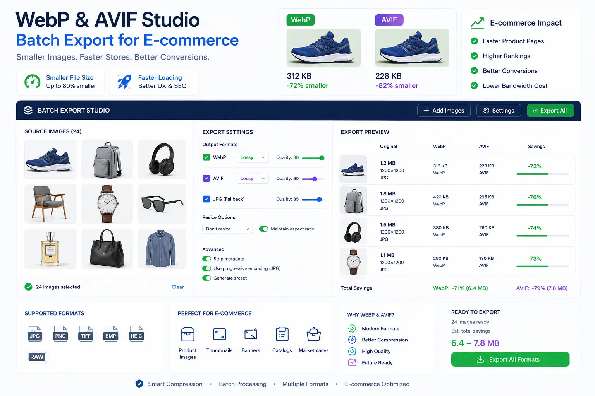
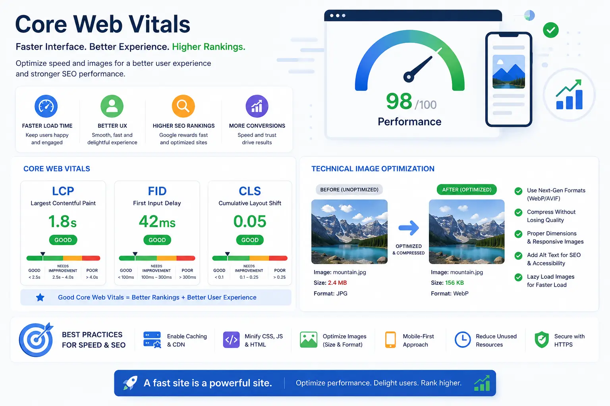

Retaining Razor-Sharp Zoom Quality While Maintaining Under-1s Site Speeds
The Visual Balance of Premium E-Commerce
For high-end e-commerce brands, catalog photography is not merely a display of merchandise; it is a critical driver of consumer trust. Modern shoppers demand the ability to scrutinize products closely, relying on high-resolution image zoom tools to inspect fine textures, intricate stitching, and raw material quality. This demand introduces a complex technical challenge to modern Website & Catalog Visual Production: how do you deliver ultra-high-resolution detail without overloading page payloads and slowing load times?
The cost of slow page loads is exceptionally high. Google’s data shows that a page load delay of just one second can drop conversions by over 20%, while directly hurting search engine optimization rankings. To solve this, technical web developers and catalog studios are integrating advanced E-commerce Image Compression Tech. By deploying custom image wrappers, responsive scripts, and multi-format exports, brands can deliver razor-sharp detail and maintain sub-second load times.
Balancing high-quality zoom with sub-second speeds requires structuring every stage of the production pipeline, from studio export settings to frontend code.
The Performance Challenge of High-Resolution Imagery
Online stores that rely on standard image files often face high bounce rates. To understand why, we must analyze the path a browser takes when loading a media-heavy product page:
- Largest Contentful Paint (LCP) Delays. LCP measures how long it takes for the page's main content—usually the primary hero image—to render. When a page uses unoptimized, high-resolution JPEG or PNG files, the LCP increases, which can negatively affect search engine rankings.
- Mobile Network Latency. While desktop visitors on high-speed fiber lines might load large pages quickly, mobile users on cellular networks face slower speeds. Large image payloads increase latency, causing visitors to leave before the product displays.
- Cumulative Layout Shift (CLS) Issues. If a browser downloads large image files without predefined width and height parameters, the page elements shift as the files render. This shifting frustrates users and impacts usability metrics.
- CPU Rendering Overhead. Decompressing large, high-resolution files requires significant mobile device CPU power. This process can cause interface lag, making scrolling and clicking feel unresponsive.
Dynamic Zoom Loading
By using High-resolution web image wrappers, stores load standard-sized files on page load and only fetch high-resolution assets when a user interacts with the zoom tool.
Shopify Theme Tuning
Focusing on optimizing catalog files for Shopify allows themes to render responsive image source sets, matching image files to target screens.
Next-Gen Compression
Using WebP and AVIF studio batch export routines reduces image file sizes by 50% to 80% compared to traditional JPEGs while retaining sharp detail.
Faster Mobile Load Times
Reducing page payload is key to reducing landing page bounce rates, keeping mobile users engaged and improving overall conversion metrics.

Advanced Image Export and Code Integration Rules
To resolve the conflict between image quality and load speed, developers and photographers must combine optimized export profiles with clean, modern front-end code:
- Rule 1: Set up WebP and AVIF studio batch export routines. During post-production, export all raw assets into next-generation WebP and AVIF files. AVIF offers superior compression efficiency for detailed textures, while WebP provides broad compatibility across older browser versions. Set the compression target to 80-85% to maintain zoom detail while reducing file sizes.
- Rule 2: Implement high-resolution web image wrappers. Avoid placing raw, high-resolution images directly in your standard HTML image tags. Instead, use custom JavaScript wrappers that load a lightweight 800px image first, loading the 2400px high-resolution zoom asset only when the user hovers over or clicks the zoom container.
-
Rule 3: Use optimized responsive image markup.
Use HTML5
<picture>elements andsrcsetattributes to serve custom image sizes based on device screen width. This allows the browser to download a smaller, lighter version of the image for mobile screens, saving bandwidth and speed. - Rule 4: Keep initial layouts lightweight. Host your catalog images on fast Content Delivery Networks (CDNs) to reduce server latency. Enable lazy loading for secondary gallery assets below the fold, instructing the browser to prioritize visible content first.
- Rule 5: Pre-allocate image dimensions in CSS. Define explicit width and height dimensions for all image elements in your CSS. This reserves the correct screen space before images download, preventing layout shifts and maintaining a stable reading experience.
- Rule 6: Strip unnecessary metadata. Use batch processing utilities to remove camera EXIF profiles, GPS coordinates, and color profiles from image containers. This metadata can add unnecessary bytes to every file in a large catalog.
Managing E-Commerce Platforms for Peak Performance
Achieving sub-second load times requires careful optimization of your store’s platform configuration, matching custom visual assets to specific layout requirements:
Shopify Theme Customization
- Implement responsive image source sets in liquid templates.
- Load standard WebP images for default views, reserving AVIF files for compatible modern browsers.
- Set up lazy loading for secondary catalog views and details below the fold.
- Remove unused scripts and third-party apps that compete for bandwidth.
Marketplace Image Optimization
- Ensure all primary images meet marketplace white-background specifications.
- Export image files at the exact maximum resolution supported by the target marketplace.
- Compress background fields to pure white (#FFF) to improve compression efficiency.
- Use batch export scripts to standardize filenames for improved image search rankings.
Mobile-First UI Layouts
- Use square (1:1) or landscape image formats to keep key product details above the fold.
- Disable hover-based zoom features on mobile layouts, replacing them with swipe-to-zoom gestures.
- Optimize thumbnail galleries to load lightweight previews, reducing mobile data usage.
- Serve responsive images scaled to the user's specific screen dimensions.
Improving Search Engine Visibility and User Interactivity
A fast, optimized product catalog does more than improve the user experience; it directly boosts search engine visibility and helps lower overall user acquisition costs.
By focusing on technical image optimization for SEO, brands can drive organic traffic. This includes writing descriptive alt text, using keyword-rich filenames, and using structured JSON-LD schemas to help search engines index product images.
Additionally, maintaining a fast Core Web Vitals interface speed is crucial for search rankings. Google uses metrics like Largest Contentful Paint and Cumulative Layout Shift as ranking signals, making speed optimization a key part of modern search engine optimization strategy.

Conclusion
Balancing high-resolution zoom quality with sub-second page loads is a key requirement for modern e-commerce success. By investing in Website & Catalog Visual Production and advanced E-commerce Image Compression Tech, brands can deliver a fast, detailed user experience.
Through structured WebP and AVIF studio batch export workflows, optimizing catalog files for Shopify, and maintaining fast Core Web Vitals interface speed metrics, you can elevate your user experience.
At The PhD Ads in Madurai, we design optimized digital catalog systems, set up high-speed High-resolution web image wrappers, and implement technical image optimization for SEO to help e-commerce brands grow.
Key Topics
Optimize Your E-commerce Site Speed and Quality
Need to set up high-speed, high-resolution product catalog images? At The PhD Ads in Madurai, we organize WebP and AVIF studio exports and optimize Shopify themes to help brands speed up load times.
Email: team@e2o.in